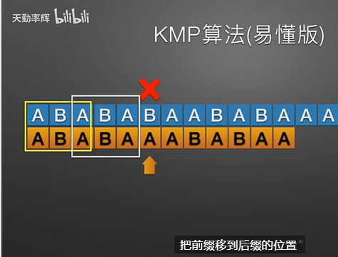
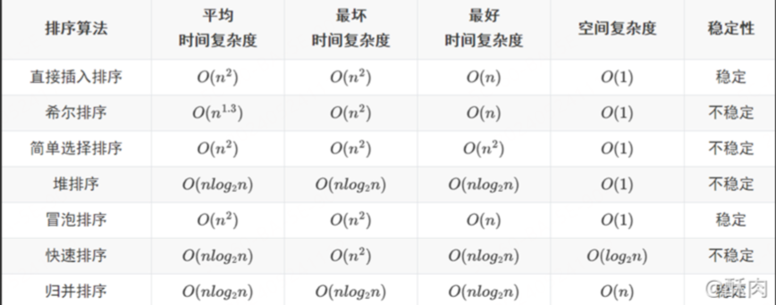
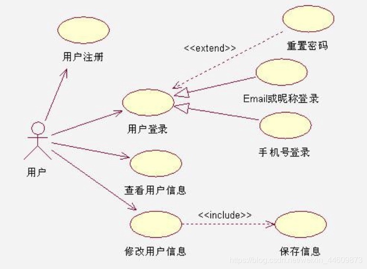
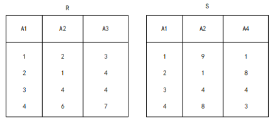
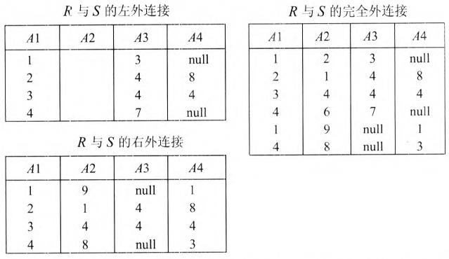
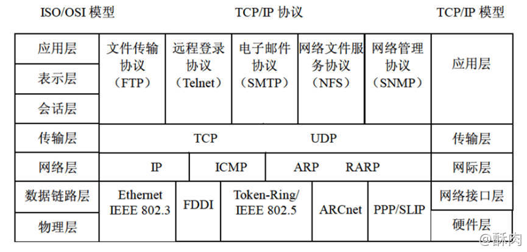
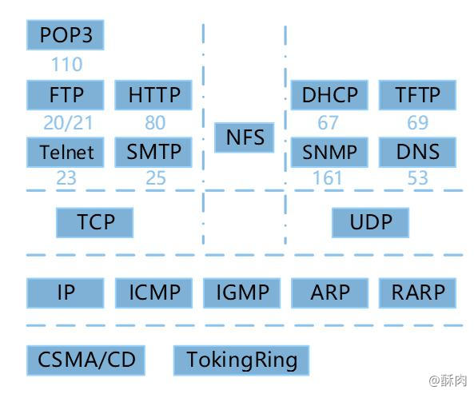

概述：软件设计师考前刷题记录
未分类
-
系统总线通常用来连接计算机中的各个部件（如CPU、内存和I/O设备）；片内总线连接寄存器和运算器部件；外部总线连接接口和外设、DMA控制器和中断控制器。
-
程序中用到的是虚拟地址，硬件中访问的通常是物理地址
-
中断向量提供的是中断服务程序的入口地址或存放中断服务程序的首地址
-
补码表示的正确项：
- 补码零的表示是唯一的
- 可以将减法运算转化为加法运算
- 符号为可以与数值位一起参加运算
- 与真值的对应关系不直观
-
指令流水线的计算方式为
-
表示层对应用层消息进行压缩、加密
- 应用层：① 保持应用程序之间建立连接所需要的数据记录，为用户服务；② 确定进程之间通信的性质。
- 表示层：① 处理通信信号的表示方法，进行不同格式之间的翻译，并负责数据的加解密、数据的压缩与恢复
- 会话层：① 主要负责两个会话进程之间的通信，即两个会话层实体之间的信息交换和管理数的交换；② 为通信进行建立连接
- 传输层：端到端的连接。① 向用户提供可靠的端到端的服务，它屏蔽了下层的数据通信细节，让用用户及应用程序不需要考虑实际的通信方法；②主要功能为负责总体的数据传输和数据控制
- 网络层：分组传输和路由选择。① 主要负责路由、选择合适的路径和进行阻塞控制等功能；② 管理数据通信，实现端到端的数据传送服务，即将数据设法从源端经过若干个中间节点传送到目的端。
- 数据链路层：传送以帧为单位的信息。① 在两个主机上建立数据链路连接，向物理层传输数据信号，并对信号进行处理使之无差错并合理地传输；② 物理地址寻址、数据的成帧、流量控制、数据的检错和重发等；③ 解决的是所传输数据的准确性的问题，控制网络层与物理层之间的通信。
- 物理层：二进制传输。
-
HTTPS加密HTTP消息的方式是会话密钥+对称加密
-
入侵检测系统一般只做检测，不做防御
-
软件著作权属于自然人的，该自然人死亡后，在有效期内，继承人只能继承特定权利，不是所有权利，比如署名权就不能继承。
-
磁盘调度分为移臂调度和旋转调度两类，在移臂调度的算法中，先来先服务和最短寻找时间优先算法可能会随时改变移动臂的运行方向
-
在磁盘调度管理中，通常先进行移臂调度，再进行旋转调度。在访问不同柱面的信息时，需要先进行移臂调度，之后进行旋转调度。在访问同一磁道的信息时，只需要进行旋转调度。
-
若磁盘的转速提高一倍，则旋转等待时间减半
-
线性表采用链表存储结构的特点包括：
- 所需空间大大小与表长成正比
- 插入和阐述操作不需要移动元素
- 无须事先估计存储控件大小
- :warning: 不可随机访问表中的任一元素
-
对采用面向对象方法开发的系统进行测试时，通常从不同层次进行测试。对类中定义的每个方法进行测试属于算法层
-
在输入条件规定的取值范围的情况下，合理的输入和不合理的输入至少都能执行一次属于黑盒测试
-
白盒测试原则：
- 在所有的逻辑判断中，取“真”和取“假”的两种情况至少都能执行一次
- 程序模块中的所有独立路径至少执行一次
- 每个循环都应在边界条件和一般条件下个执行一次
-
管理键盘最适合采用的I/O控制方式是中断方式。
-
哈夫曼树共有127个结点，对其进行哈夫曼编码，共能得到64个字符的编码（求叶子节点的个数）
叶子结点：度为0的节点，与度为2的节点之间存在如下关系： 同时
已知一棵度为3的树寸（一个节点的度是指其子树的数目，树的度是指该树中所有节点的度的最大值）中有5个度为1的节点，4个度为2的节点，2个度为3的节点，那么，该树中的叶子节点数目为9
本题考查数据结构的基础知识设树中的节点总数为n、分支数目为m，那么n=5+4+2+叶子节点数，m=5X1+4X2+2X3在树中，节点总数等于分支数目加上1，即n=m+1,因此，叶子节点数=5X1+4X2+2X3+1-5-4-2=9
-
甘特图：
- 一种进度管理的工具
- 易于看出每个子任务的持续时间
- 易于看出目前项目的实际进度情况
- 不易于看出子任务之间的衔接关系
-
在软件系统交付给用户使用后，为了使用户界面更友好，对系统的图形输出进行改进，该行为属于改善型改进
-
在开发过程中，会引用第三方类。第三方类又会引用其他类。把所有的类封装在一个包中，就能提高开发效率，称为共同重用原则。
-
C语言中全局变量的存储空间在静态数据区分配。
-
Java语言符合的特征有采用即时编译、对象在堆空间分配和自动的垃圾回收处理。
-
确定的有限自动机和不确定的有限自动机：不确定的有限自动机是一个状态到另一个状态的方式有多种，确定的有限自动机是一个状态到另一个状态的方式只有一种。”不确定“是指当前状态的后继状态是不确定的。
-
脚本语言：主要采用解释方式实现
- 脚本语言属于动态语言，其程序结构可以在运行中改变
- 脚本语言一般通过脚本引擎解释执行，不产生独立保存的目标程序
- C语言属于静态语言，其所有成分可在编译时确定
-
编译语言：
- 执行效率更高
-
标记语言：
- 标记语言常用于描述格式化和链接
-
汇编语言：
- 汇编语言源程序中的指令语句将被翻译成机器代码
- 汇编程序以汇编语言源程序为输入，以机器语言表示的目标程序为输出
- 汇编语言的指令语句必须具有操作码字段，可以没有操作数字段
-
编译方式
- 在机器上运行的目标程序完全独立于源程序
- 运行与源程序等价的目标程序
-
解释方式
- 运行时，直接执行源程序或源程序的内部形式
- 运行程序的控制权在解释程序
- 不产生独立的目标程序
-
为了实现多级中断，保存程序现场信息最有效的方法是使用堆栈
-
字符串的长度是指串中所含字符的个数
-
散列表（哈希表）及其查找特点：
- 在散列表中进行查找时，需要与哈希桶中所有的关键字进行比较，直到找到与目标关键字相等的元素或者确定目标元素不存在于哈希桶中。
- 散列表的装填因子越小，发生冲突的可能性就会越小。但是哈希表填装因子过小时，会浪费大量空间，而当装填因子过大时，则会导致冲突的概率增加，影响散列表的性能。
- 用线性探测法解决冲突可能会产生聚集问题，即出现大量密集的冲突，使得哈希桶中的元素出现聚集。为了避免这种情况，可以采用其他的探测方法，如二次探测、双重散列等。
- 用链地址法解决冲突可以保证每个桶中只有一个元素时，平均查找长度为1，但是当一个同种有多个元素师，依然需要遍历链表中的所有元素才能找到目标元素，平均查找长度就会增加。
-
信号量S的取值范围为 资源个数R、进程个数P 信号量S的取值范围为： 发生死锁的最小i值为：
-
数据库基本概念：透明
- 分片透明是指用户或应用程序不需要知道逻辑上访问的表具体是怎么分块存储的
- 复制透明是指采用复制结束的分步方法，用户不需要知道数据是复制到哪些节点，如何复制的
- 位置透明是指用户无须知道数据存放的物理位置
- 逻辑透明即指局部数据模型透明，是指用户或应用程序无须知道局部场地使用的是那种数据模型
-
若了解问题的解空间，并以广度优先的方式搜索解空间，则采用的是分支限界算法策略；以深度优先的方式搜索解空间，则采用回溯算法设计策略。
-
软件变更控制是变更管理的重要内容，要有效进行变更控制，需要借助配置数据库和基线的概念。配置数据库一般包括开发库、受控库和产品库。
-
对于大多数通用程序设计语言，用上下文无关文法描述其语法即可。
-
对高级语言源程序进行编译或解释的过程可以分为多个阶段，解释方式包含：
- 词法分析 输入：源程序 输出：记号流
- 把源程序看做一个线性字符序列进行分析
- 使用有限自动机（不确定的有限自动机NFA或确定的有限自动机DFA）
- 语法分析 输入：记号流 输出：语法树（分析树）
- 分析程序中的句子结构是否正确
- 可以发现程序中所有的语法错误，编译正确的程序必然不包含语法错误
- 语义分析 输入：语法树
- 语义分析不能发现程序中所有的语义错误，编译正确的程序可能包含语义错误
- 中间代码生成
-
中间代码不依赖于具体的机器
-
使用中间代码可提高编译程序的可移植性
-
中间代码可以用树或图表示，常见的中间代码有后缀式、三地址式和树等
-
有利于进行与机器无关的优化处理
-
常用的中间代码表示有：
- 树
- 后缀式
- 四元式
-
- 目标代码生成
- 该阶段分配寄存器
- 与目标机器的体系结构相关
- 词法分析 输入：源程序 输出：记号流
-
有限自动机是词法分析的一个工具，能正确地识别正规集
-
确定的有限自动机（DFA）：对每一个状态来说识别字符后只有一个转移状态
-
不确定的有限自动机（NFA）：对每一个状态来说识别字符后有一个以上的转移状态
-
-
中缀式：a+b ，后缀式（逆波兰式）：ab+，后缀式利用栈进行求值
-
自顶向下的语法分析方法：递归下降分析法、预测分析法
-
自底向上的语法分析方法：移进-归约分析法、LR分析法
-
大多数程序设计语言的语法规则用上下文无关法描述
-
进程调度分为可剥夺式和不可剥夺式两种
-
数据库各阶段任务：
- 需求分析阶段：了解现行系统的概况，确定新系统功能，确定系统边界、收集支持系统目标的基础数据及其处理方法
- 逻辑设计阶段：对关系模式进一步的规范化处理。部分关系模式的处理、分解、合并或增加冗余属性，提高存储效率和处理效率
-
程序的三种基本控制结构是顺序、选择和重复。
-
编写汇编语言程序时，下列寄存器中程序员访问的是程序计数器（PC）。
-
若一个程序语言可以提供链表的定义和运算，则其运行时的数据空间必须采用堆策略分配存储。
-
索引节点块、目录块或空闲块，特别是系统目录文件在写回磁盘时发生崩溃，则对系统的影响较大。
-
表达式采用逆波兰式表示时，利用栈进行求值
-
设计操作系统时不需要考虑的问题是语言编译器的设计实现
-
通过元素在存储空间中的相对位置来表示数据元素之间的逻辑关系，是顺序存储的特点
-
哈希表和二叉排序树都可以动态创建，属于动态查找表
-
顺序查找方法既适用于顺序存储结构，也适用于链表结构
-
使用队列对图进行广度优先遍历
-
连通无向图的最小生成树种，顶点数恰好比边数多1
-
完全图适合采用邻接矩阵存储
-
Huffman（哈夫曼）树：
- 权值越大的叶子离根结点越近
- Huffman（哈夫曼）树中不存在只有一个子树的结点
- Huffman（哈夫曼）树中的结点总数一定为计数
-
I/O软件隐藏了I/O操作实现的细节，方便用户使用I/O设备
-
管道-过滤器体系结构：一种面向数据流的软件体系结构，主要用于实现复杂的数据多步转换处理
- 软件构件具有良好的高内聚、低耦合的特点
- 允许软件设计者将整个系统的输入输出行为看成是多个过滤器的行为的简单合成
- 支持软件复用/重用
- 系统维护和增强系统性能简单
- 支持对一些如吞吐量、死锁等属性的分析
- 支持并行执行
- 更容易扩展，可以通过添加新的过滤器来添加新的功能
- 灵活性和可配置型，重新组合过滤器改变系统行为
-
PHP 更适合用来进行动态网页处理
-
Huffman（哈夫曼）编码属于熵编码
-
KMP算法Next数组

a b a a b a c a 0 1 1 2 2 3 4 1 a a a b a a a 0 1 2 3 1 2 3 -
在划分模块时，一个模块的作用范围应该在其控制范围之内。若发现其作用范围不在其控制范围内，则适当的处理方法有：
- 将判定所在模块合并到父模块中，使判定处于较高层次
- 将受判定影响的模块下移到控制范围内
- 将判定上移到层次较高的位置
-
嵌入式系统初始化过程主要有3个环节，按照自底向上、从硬件到软件的次序依次为
片级初始化 -> 板级初始化 -> 系统级初始化- 片级初始化：完成嵌入式微处理器的初始化，包括设置嵌入式微处理器的核心寄存器和控制寄存器、嵌入式微处理器核心工作模式和嵌入式微处理器的局部总线模式等。片级初始化把嵌入式微处理器从上电时的默认状态逐步设置成系统所要求的工作状态。这是一个纯硬件的初始化过程。
- 板级初始化：完成嵌入式微处理器以外的其他硬件设备的初始化。另外，还需设置某些软件的数据结构和参数，为随后的系统级初始化和应用程序的运行建立硬件和软件环境。这是一个同事包含软硬件两部分在内的初始化过程。
- 系统级初始化：以软件初始化为主，主要进行操作系统的初始化。BSP将对嵌入式微处理器的控制权转交给嵌入式操作系统，由操作系统完成余下的初始化操作，包含加载和初始化与硬件无关的设备驱动程序，建立系统内存区，加载并初始化其他系统软件模块，如网络系统、文件系统等。最后，操作系统创还能应用程序环境，并将控制权交给应用程序的入口。
-
流水线方式执行指令
- 流水线方式下可同时执行多条指令
- 流水线方式提高了各部件的利用率
- 流水线方式提高了系统的吞吐率
-
主存与Cache的地址映射方式中，全相联方式可以实现主存任意一块装入Cache中任意位置，只有装满才需要替换。
-
与CPU有关的信息交换都是采用同步传输，除了CPU与IO设备之间
-
Cache(高速缓冲存储器)
- Cache的内容是主存部分内容的拷贝
- Cache的命中率并不随其容量增大线性地提高
- Cache位于主存与CPU之间
- Cache的设计思想是在合理成本下提高命中率
-
由硬件自动完成Cache与主存之间的地址映射
-
PCI总线是并行内总线，SCSI总线是并行外总线
-
RISC与CISC
RISC CISC 指令种类 少、精简 多、复杂 指令复杂度 低（简单） 高（复杂） 指令长度 固定 变化 寻址方式 少 复杂多样 实现（译码）方式 硬布线控制逻辑
（组合逻辑控制器）微程序控制技术 通用寄存器数量 多、大量 一般 流水线技术 支持 支持 执行时长 大多指令在一个时钟周期内完成 -
闪存：
- 掉电后信息不会丢失，属于非易失性存储器
- 以块为单位进行删除操作
- 在嵌入式系统中可以用 Flash 来代替 ROM存储器
-
采用总线结构的优点：
- 简化系统结构，便于系统设计制造
- 大大减少了连接数目，便于布线，减小体积，提高系统的可靠性
- 便于接口设计，所有总线连接的设备均采用类似的接口
- 便于系统的扩充、更新与灵活配置，易于实现系统的模块化
- 便于设备的软件设计，所有接口的软件就是对不同的口地址进行操作
- 便于诊断和维修，同时降低了成本
-
总线复用方式可以减少总线中信号线的数量
-
常用的虚拟存储器由主存-辅存两级存储器组成。
-
指令寄存器的位数取决于指令字长
-
指令系统中采用不同寻址方式的目的是扩大寻址空间并提高编程灵活性
-
若某计算机系统的I/O接口与主存采用统一编址，则输入输出操作是通过访存指令来完成的。
-
CPU需要与外设进行数据交换，采用中断方式和DMA方式控制技术时，CPU与外设可并行工作
-
系统总线：ISA（工业标准总线）、EISA（ISA的32位）、PCI（并行内总线）、SCSI（并行外总线）
-
SRAM与DRAM DRAM（动态随机存储器）构成主存，DRAM需要周期性的刷新保持信息 SRAM（静态随机存储器）构成Cache
SRAM DRAM 原理 触发器 电容 读出 非破坏性 破坏性 刷新 不用 用 送地址 一起送 行列分开送 速度 快 慢 集成度 低 高 功耗 高 低 成本 高 低 用途 Cache 内存 闪存可以理解为U盘，故断电后信息不回丢失。闪存是以块为单位进行删除的。
闪存是EPROM的一种类型
-
数据库的安全机制中，通过提供存储过程供第三方开发人员调用进行数据更新，从而保证数据库的关系模式不被第三方所获取。
-
m阶B-树的特征：
- 树中每个结点最多有M棵子树。即根节点最多有m棵子树
- 若根节点不是叶子及诶单，则最少有两棵子树
- 除根之外的所有非终端节点最少有 棵子树
- 所有叶子结点都在同一个层次上
- 节点中的关键字有序排列
-
平衡二叉树：二叉树的任意一个结点的左右子树高度之差的绝对值不超过1
-
二叉排序树：左<根<右。中序遍历得到的序列是有序序列。
-
最优二叉树（哈夫曼树）：是一类带权路径长度最短的树
-
算法使用场景
-
分数背包 贪心算法 0-1背包 动态规划 旅行商 暴力搜索 最长公共子序列 动态规划 -
VLAN tag 在 OSI 参考模型的 物理链路层
-
结构型模式涉及如何组合类和对象以获得更大的结构，行为模式涉及算法和对象间职责的分配。
-
系统的可维护性指标：可理解性、可测试性和可修改性
排序算法
- Dijkstra 算法算法设计策略是贪心算法，找最短路径

| 【算法】排序算法之基数排序 - 知乎 | 时间复杂度 | 空间复杂度 | |
|---|---|---|---|
| 冒泡排序 | 从前往后依次两两进行比较，如果符合条件则调换 | ||
| 简单选择排序 | 从列表中依次选择第n小的替换到对应的位置 | ||
| 折半查找 | 是一个分支算法 只能应用于有序表 若表长为n，则时间复杂度为 | ||
| 直接插入排序 | 排序过程中，每次从无序表中取出第一个元素，将其插入到有序表中的适当位置，使有序表的长度不断加长。 | O(n) | O(1) |
| 快速排序 | 最好：O(nlgn) 最坏：O(N^2^) | O(1) | |
| 归并排序 | 分组然后合并 | 最好与最坏情况都是O(nlgn) |
UML用例图
| 图 | 作用 |
|---|---|
| 用例图 Use Case Diagram | 用例图用于描述系统外部的各类执行者与系统提供的各种用例之间的关系，展示了系统的功能需求。 他说明了谁要使用系统，以及他们使用该系统可以做些什么 |
| 类图 Class Diagram | 类图描述系统中类的静态结构，以及各个类之间的关系。 它展示了类的属性、方法以及他们之间的继承、关联、聚合等关系 |
| 对象图 Object Diagram | 对象图是类图的一种实例化图，描述了系统中的对个对象在某一时刻的状态。他是类图的动态实例。 |
| 包图 Package Diagram | 包图对构成系统的模型元素进行分组整理，表示包与包之间的关系，描述系统的分层结构。① 可以拥有类、接口构建、节点；② 一个包可以嵌套其他包；③ 一个包类元素不能重名 |
| 活动图 Activity Diagram | 活动图描述了业务实现用例的工作流程，展示了从一个活动到另一个活动的控制流 |
| 状态图 State Diagram | 状态图是描述状态到状态控制流的图，常用语动态特性建模。它展示了对象在其声明周期中的不同状态以及状态之间的转换。 |
| 顺序图 Sequence Diagram | 描述多个对象之间按顺序调用情况 |
| 协作图 Collaboration Diagram （通信图） | 描述了对象之间的协助关系，展示了对象之间的消息传递和交互 |
| 构件图 Component Diagram | 一种特殊的UML图，用于描述系统的静态实现视图，展示系统中的软件和硬件组件以及他们之间的依赖关系 |
| 部署图 Deployment Diagram | 部署图定义系统中软硬件的物理体系结构，展示了硬件节点、软件组件以及它们之间的部署关系。 |
用例图之间的关系

-
泛化关系 这是一种继承关系，子用例是父用例的一种特殊形式，它继承了父用例的所有结构、行为、关系。在图形表示中，三角箭头指向父用例。如上所示Email或昵称登录、手机号登录
-
包含关系
一个用例的行为包含了另一个用例的行为。当执行基用例是，每次都必须调用被包含用例。被包含用例也可以单独执行。
-
扩展关系 扩展用例在扩展点上增加新的维护和含义。扩展用例为基用例添加新的行为，箭头指向基用例。这种关系允许基用例的行为在特定条件下被扩展用例所添加的行为所修改或增强。
数据库
-
数据库的对应关系 | 表现 | 三级模式 | 视图 | | -------- | -------------------- | ------------------- | | 基本表 | 模式 | 概念视图 | | 存储文件 | 内模式（只有一个） | 内部视图 | | 视图 | 外模式（可以有多个） | 用户视图 |
-
两级映像
模式/内模式映像 物理独立性 外模式/模式映像 逻辑独立性 -
数据库的三级模式
模式 描述 概念模式 概念模式是数据库中全体数据的逻辑结构和特征的描述，是所有用户的公共数据视图。一个数据库只有一个概念模式。 外模式 外模式（子模式、用户模式）用以描述用户看到或使用的哪部分数据的逻辑结构，用户根据外模式用数据操作语句或应用程序去操作数据库中的数据 内模式 内模式定义的是存储记录的类型、存储域的表示以及存储记录的物理顺序，指引元、索引和存储路径等数据的存储组织。一个数据库只有一个内模式 -
4类故障
- 事务内部故障。事务内部的故障有的可以通过事务程序本身发现。但有些是非预期的，不能由事务程序处理，例如运算溢出、并发事务发生死锁等
- 系统故障。通常称为软故障，是指造成系统停止运行的任何事件，使得系统要重新启动。
- 介质破坏。通常称为硬故障，如磁盘损坏、磁头碰撞和瞬时强磁干扰。此类故障发生的几率小，但破坏性最大。
- 计算机病毒。
-
三大范式
- 1NF。数据库表的每一列都是不可分割的原子项。避免数据冗余和混淆。 例如：不能在“姓名”列中同时存储一个人的姓换和名，而应该拆分为”姓“和”名”。
- 2NF。除了主键以外，其他字段都必须依赖于主键。 例如：在一个订单表中，订单号（主键）与订单详情、客户信息等字段都有关联。但客户信息不应该直接存储在订单表中，而应该单独建立一个客户表，并通过订单号与客户ID进行关联。
- 3NF。在满足第二范式的基础上。3NF 要求飞逐渐字段之间不存在传递依赖关系，也就是说，一个非主键字段不能依赖于另一个非主键字段。 例如：在一个员工表中，员工号（主键）与姓名、部门号等字段都有关联。但部门号（非主键）不应该与部门名称（非主键）直接关联，而应该通过部门号与部门表进行关联。
-
连接


设计模式
创建型
| 工厂方法 Factory Method | 定义一个用于创建对象的接口，让子类决定实例化哪一个类 |
| 抽象工厂 Acstract Factory | 提供一个创建一系列相关或相互依赖对象的接口，而无须指定他们具体的类 |
| 生成器 Builder | 将一个复杂对象的构建与它的表示分离，使得同样的构建过程可以创建不同的表示 |
| 原型 Prototype | 用原型实例指定创建对象的种类，并且通过复制这些原型创建新的对象 |
| 单例 Singleton | 保证一个类仅有一个实例，并提供一个访问它的全局访问点 |
结构型
结构型类模式只有一个适配器
| 适配器 Adapter | 将一个类的接口转换成客户希望的另一个接口 |
| 桥接 Bridge | 将抽象部分与其实现部分分离，使它们都可以独立的变化 |
| 组合 Composite | 将对象组合成树形结构以表示“部分-整体”的层次结构 |
| 装饰 Decorator | 动态地给一个对象添加一些额外的职责 |
| 外观 Facade | 为子系统中的一组结构提供一个一致的界面，Facade模式定义了一个高层接口，这个接口使得这一子系统更加容易使用 |
| 享元 FlyWeight | 运用共享技术有效地支持大量细粒度的对象 |
| 代理 Proxy | 为其他对象提供一种代理以控制对这个对象的访问 |
行为型
行为型类模式包括 解释器和模版方法，其他的都为行为型对象模式
| 责任链 Chain of Responsibility | 十多个对象都有机会处理请求，从而避免请求的发送者和接收者之间的耦合关系 |
| 命令 Command | 讲一个请求封装为一个对象，从而使得可以用不同的请求对客户进行参数化；对请求排队或记录请求日志，以及支持可撤销的操作 |
| 解释器 Interpreter | 给定一个语言，定义它的文法的一种表示，并定义一个解释器，这个解释器使用该表示来解释语言中的句子 |
| 迭代器 Iterator | 提供一种方法顺序访问一个聚合对象中的各个元素，且不需要暴露该对象的内部表示 |
| 中介者 Mediator | 用一个中介对象来封装一系列的对象交互 |
| 备忘录 Memento | 在不破坏封装性的前提下捕获一个对象的内部状态，并在对象之外保存这个状态 |
| 观察者 Observer | 定义对象间的一种一对多的依赖关系，当一个对象的状态发生改变时，所有依赖于它的对象都得到通知并被自动更新 |
| 状态 State | 允许一个对象在其内部状态改变时改变他的行为 |
| 策略 Strategy | 定义一系列的算法，把他们一个个封装起来，并且使它们可以互相替换 |
| 模板反复噶 Template Method | 定义一个操作中的算法骨架，而将一些步骤延迟到子类中 |
| 访问者 Visitor | 表示一个作用于某对象结构中的各元素的操作 |
网络相关


网络安全
| 对称密钥算法 （共享密钥加密算法） | 非对称密钥算法 （公钥、公开密钥加密算法） |
|---|---|
| DES 3DES RC-5 RC4 IDEA AES分组加密算法 | RSA ECC DSA |
- AES是一种分组加密算法
- ARP攻击造成网络无法跨网段通信的原因是伪造网关ARP报文使得数据包无法发送到网关。
- DES是共享密钥加密算法
- PKI体制中，保证数字证书不被篡改的方法是用CA的私钥对数字证书签名。
- PPP认证：PPP扩展认证协议支持多种认证机制
- 口令验证协议（PAP）：简单的两次握手认证方法，采用文本方式发送密码
- 质询握手认证协议（CHAP）：安全认证协议是CHAP，它使用三次握手的会话过程传送密文。共享密钥参与计算Hash值，密钥不通过网络传送。也可以进行双向身份认证，终端也可以向服务器进行挑战，使得双方都能确认对方身份的合法性。
- X509数字认证证书标准推荐使用的密码算法RAS。而国密SM2数字证书采用的公钥密码算法是ECC基于椭圆曲线的公钥密码算法。ECC算法与RAS算法相比具有加密强度高、计算速度快的优点。
- 电子邮件相关的协议：
- SSL
- HTTPS
- PGP
- 网络攻击：主动攻击和被动攻击
- 主动攻击：攻击者访问他所需信息的故意行为。比如通过远程登录到特定机器的邮件端口以找出企业的邮件服务器的信息；伪造无效IP地址去连接服务器，使接受到错误IP地址的系统浪费时间去连接那个非法地址。攻击者是在主动地做一些不利于你或你的公司系统的事情。主动攻击包括拒绝服务攻击（Dos）、分布式拒绝服务（DDoS）、信息篡改、资源使用、欺骗、伪装、重放等攻击方法
- 被动攻击主要是收集信息而不进行访问，数据的合法用户对这种活动一点也不会察觉到。被动攻击包括嗅探、信息收集、会话拦截等攻击方法。
- DoS攻击
- SYN Flooding攻击属于DoS攻击
- 包过滤防火墙
- 包过滤技术对应用和用户是透明的
- 公钥体系中，私钥用于解密和签名，公钥用于加密和验证签名
- 用户A和B要进行安全通信，通信过程需要双方身份和消息不可否认。A和B通信时可使用数字证书来对用户的身份进行认证；使用数字签名确保消息不可否认。
- 网络安全包含了网络信息的：
- 可用性：用户可利用网络时间的百分比
- 保密性：
- 完整性：未经授权不能进行修改
- 真实性：通过数字签名
- 计算机病毒的特征包括：
- 传染性、触发性
- 隐蔽性、感染性
- 潜伏性、破坏性
- 访问控制的任务包括授权、确定存取权限、实施存取权限
- 入侵检测系统：
- 专家系统
- 模型检测
- 简单匹配
- 应用级防火墙是内部网和外部网的隔离点，它可对应用层的通信数据进行监控和过滤
- 蠕虫病毒：红色代码、爱虫病毒、熊猫烧香、Nimda病毒、爱丽滋病毒、震网
- 木马软件：冰河
- 三网合一的三网是指电信网、广播电视网、互联网
知识产权基础知识
- 商标权的保护器是可以延长的
- 合理使用指可以不经著作权人许可，不需支付报酬，使用其作品
- 软件著作权中翻译权：
- 将原软件从一种程序设计语言转换成另一种程序设计语言
- 软件著作权人对其软件享有的以其它各种语言文字形式再表现
- 对软件的操作界面或者程序中涉及的语言文字翻译成另一种语言文字
- 引用资料必须是已发表的作品，但只能限于介绍、评论作品，只要不构成自己作品的主要部分，可适当引用资料，而不必征得原作者的同意，不需要向他支付报酬。
- 政策法规不使用著作权法保护
- 署名权、修改权、作品完整权受永久保护
- 必须使用注册商标的是烟草制品
多媒体相关
- 数字语音的采样频率定义为8KHz，是因为 语音信号定义的频率最高值为4kHz。
- 由ISO制定的MPEG系列标准中，MPEG-7是多媒体内容描述接口标准
软件工程基础知识
-
瀑布模型：将软件生存周期中的各个活动规定为依线性顺序连接的若干阶段。以文档作为驱动、适合于软件需求很明确的软件项目。优点是容易理解，管理成本低；强调开发的阶段性早期计划及需要调查和产品测试
-
V模型：描述了质量保证活动和沟通、建模相关活动以及早期构建相关的活动之间的关系。提供了一种将验证确认活动应用于早起软件工程工作中的方法。
-
增量模型：将需求分段为一系列增量产品，每一增量可以分别开发。采用随着日程时间的进展而交错的线性序列，每一个线性序列产生软件的一个可发布的“增量”。 优点：第一个可交付版本所需要的成本和时间很少；开发由增量表示的小系统所承担的风险不大；可以减少用户需求的变更；运行增量投资，即在项目开始时，可以仅对一个或两个增量投资。
-
原型模型：适合于用户需求不明确、需求经常变化的情况。系统规模不是很大也不复杂时，采用该方法比较好。
-
螺旋模型：将瀑布模型和行结合起来，加入了两个模型忽略的风险分析。强调风险分析，适用于庞大、复杂并且具有高风险的系统。需要开发人员具有相当丰富的风险评估经验和专门知识。过多的迭代次数会增加开发成本，延迟提交时间。
-
制定计划
-
风险分析
-
实施工程
-
用户评估
-
-
喷泉模型：以用户需求为动力，以对象作为驱动。支持软件重用和多项开发活动集成，具有迭代行和无间隙性。
-
敏捷开发模型
-
极限编程（XP）：由价值观、原则、实践和行为4个部分构成
- 4大价值观：沟通、简单性、反馈和勇气
- 5大原则：快速反馈、简单性假设、逐步修改、提倡更改和优质工作
- 12大原则：计划游戏、小型发布、隐喻、简单设计、测试先行、重构、结对编程、集体代码所有制、持续集成、每周工作40小时、现场客户和编码标准
-
水晶法：每一个项目都需要一套不同的策略、约定和方法论
-
并列争求法：每30天一个迭代或冲刺，并按需求的优先级别来实现产品。
-
敏捷统一过程（AUP）：在大型上连续，在小型上迭代
-
-
ISO\IEC软件质量模型规定的质量特性
功能性 可靠性 易用性 效率 维护性 可移植性 适合性
准确性
互操作性
功能性的依从性
安全保密性容错性
易恢复性
成熟性
可靠性的依从性易学性
易理解性
易操作性
易用性的依从性时间特性
资源利用特性
效率依从性易测试性
易改变性
稳定性
易分析性
维护性的依从性适应性
易安装性
共存性
易替换性
可移植性的依从性 -
可靠性 MTTF/(1+MTTF)
-
可用性 MTBF/(1+MTBF)
-
可维护性 1/(1+MTTR)